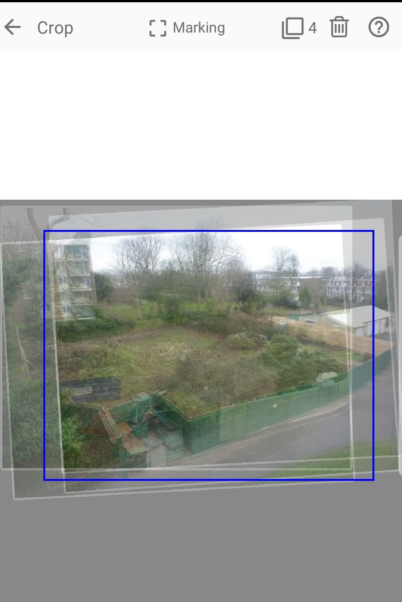

Zoetic uses a user specified crop of the project's "average" image when generating the project's video. The "average" image is made by aligning all the images to the target image and then merging all those images to a single image. Due to the alignment operation, it is very unlikely that all the images boarders will be aligned. In fact the images will probably resemble a very untidy stack of cards. This means that the user specified crop is likely to fall outside of some of the image's boarders. (The wider/larger the crop, the greater the number of images that will not fully cover the crop.)
Two examples of an average image with a user specified crop, produced from a project of four images.
In the first example, the crop is so large that none of the four images fully covers it. (Note the '4' at the top of the image.) In the second example, the crop has been resized sufficiently so that it is covered by all the images. For the latter case, no background will be exposed in the resulting video. For the former, the user will need to decide on how to handle the exposed background.
The last four options are all available in Zoetic's Settings.